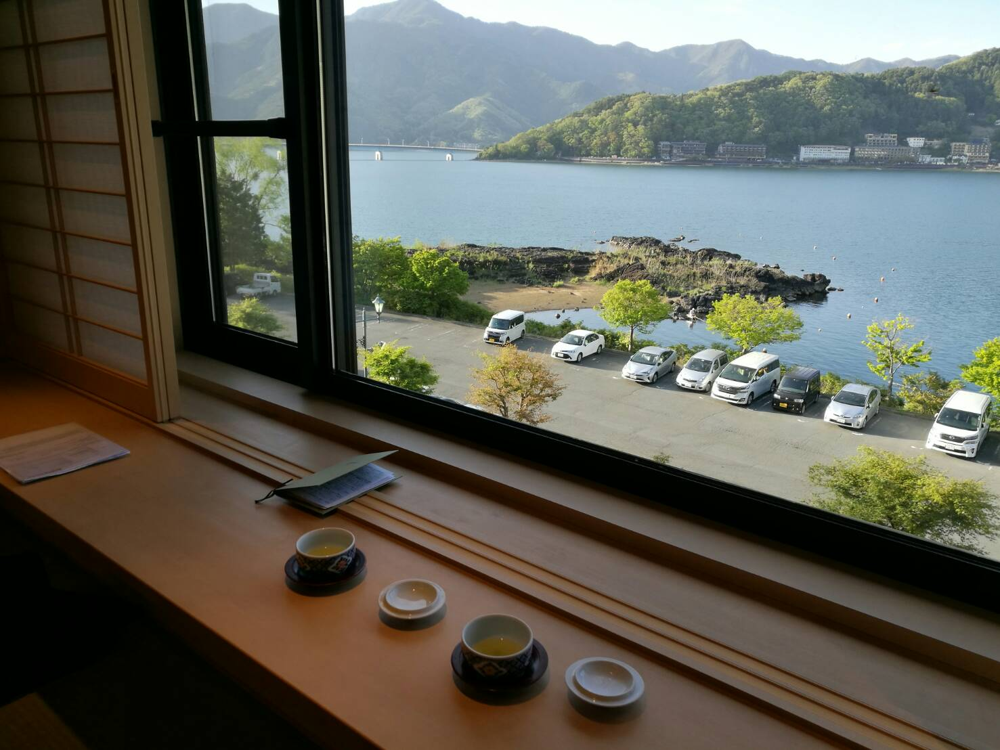
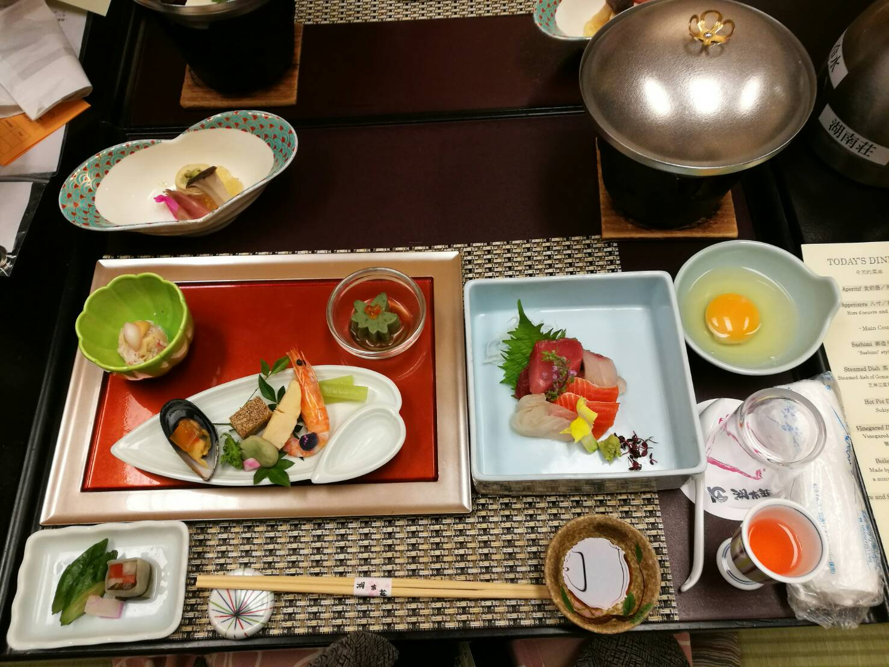
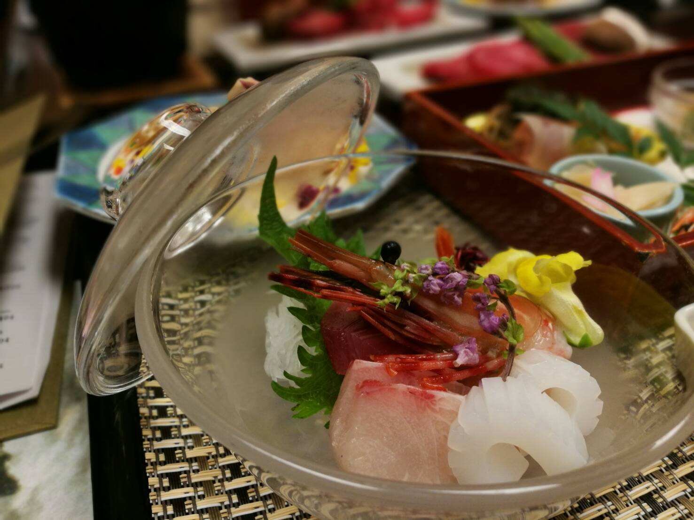
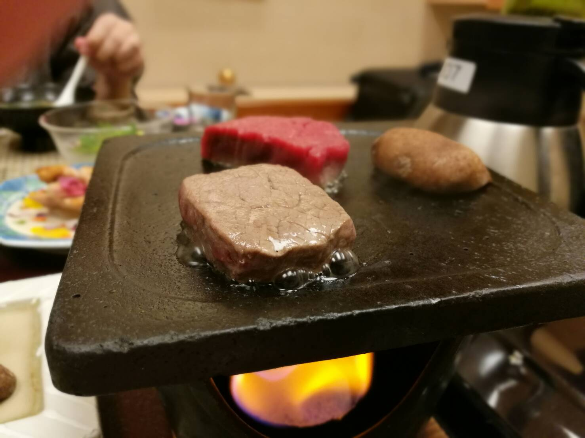
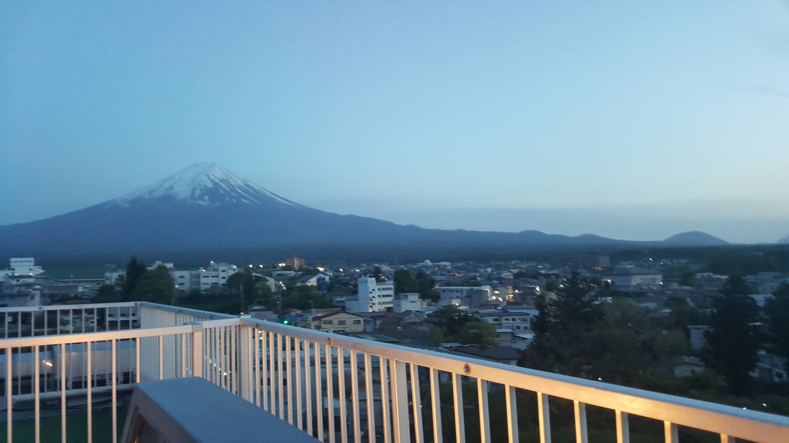
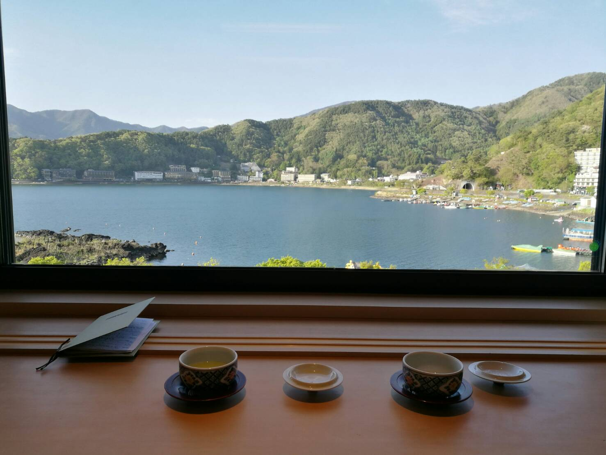

THeaded to Fuji-Kawaguchiko in May this year and there, we stayed at the Konansou Onsen Hotel. It was approximately SGD$300 a night inclusive of a kaiseki dinner and a buffet breakfast. When we arrived at the Kawaguchiko bus station, we headed to the bus stop where the various ryokan and hotel buses will pick up their guests. For Konansou, you have to call the ryokan when you arrive! This wasn’t very obvious on the booking sheet so Danna and I stood there for quite a while before Danna checked the website and realised that we had to call them. Once we did, the shuttle arrived in like 10mins! They provide a shuttle back to the bus station on the check out day too!
view from our room!
In choosing the ryokan, I had 4 things I looked at Proximity to the public transport for us to get around Kawaguchiko. Food! View from room Budget: not more than $400 per night Transport Konansou was great on view and proximity to the public transport (the bus stop is literally just outside the hotel). Another thing is you can walk from the hotel to the kachi kachi ropeway as well as the area for the boat ride. Food Food was pretty okay, it was decent but not mind blowing. Breakfast buffet was alright and dinner was pretty okay. Here are some pictures of the in room dinner 🙂
Dinner night 1
Dinner night 2: Sashimi
Dinner night 3: Beef!
I have had better quality food in an Hokkaido Ryokan so I was not really impressed by the spread here. A friend said the food at Sunnide (another Ryokan in Kawaguchiko is better). But I guess given the list of considerations this was a good in between. Views! Konansou has a beautiful foot onsen which gives you a beautiful view of Mount Fuji! Also, I loved the view of the lake from the room 🙂
Still some little Sakura left!
View from Room!
We stayed here a total of 2 nights. Both nights dinner was served in our room and that was so nice! We also ordered a bottle of wine and some sake. I’m not a wine or sake expert but I enjoyed both drinks very much. For more images of the room, you can check out other travellers on TripAdvisor: Click here! Till next time, 🙂